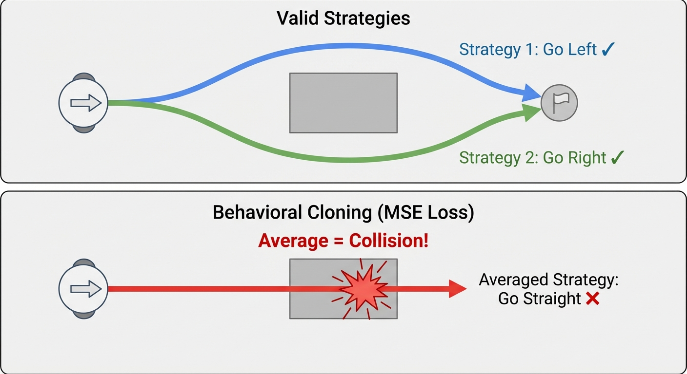
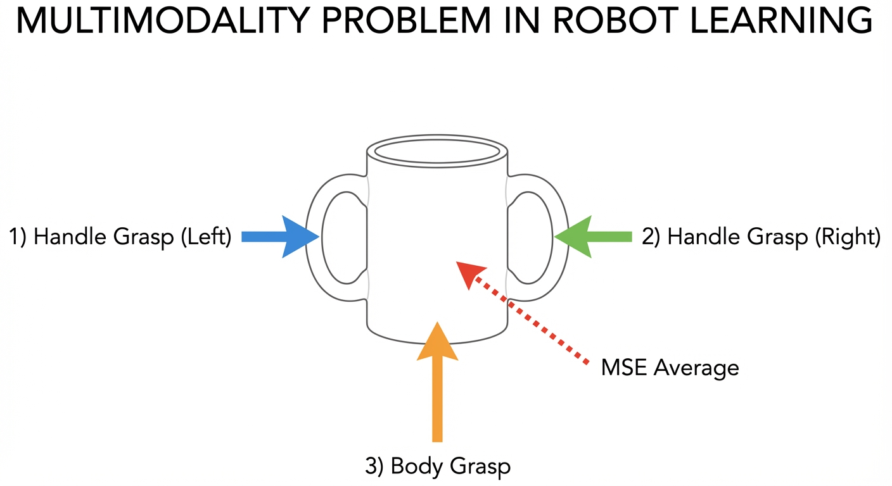
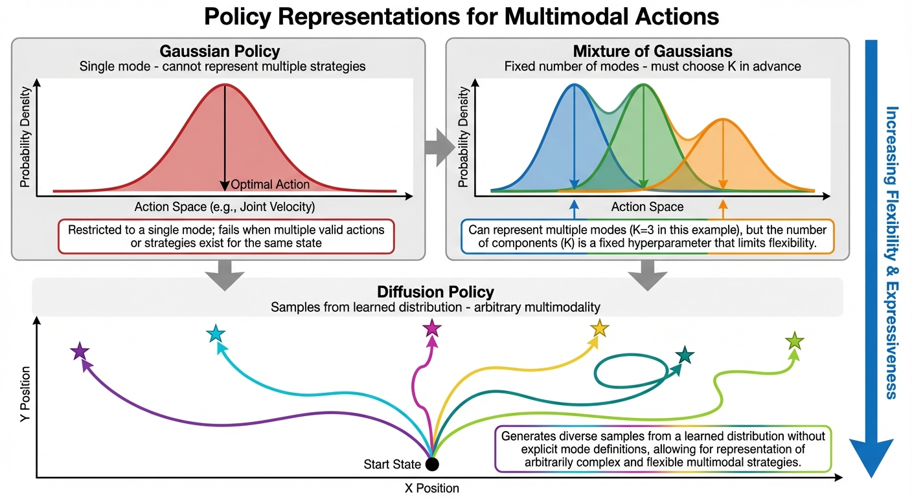

Robot Learning Part 1: Background & Current State of the Field
- Classical robotics relies on hand-crafted dynamics models — works for factories, fails for kitchens
- Reinforcement Learning (RL) learns from rewards but needs millions of trials — impractical for real robots
- Behavioral Cloning (BC) learns from demonstrations via supervised learning — the foundation of modern robot learning
- Multimodality (multiple valid solutions) breaks naive BC; expressive models like diffusion handle it well
- This post builds the conceptual foundation for understanding Diffusion Policy in Part 2
Why This Post?
In Part 0, we surveyed the robot learning landscape and saw how diffusion models are revolutionizing robotic manipulation. But to truly understand why Diffusion Policy works so well, we need to step back and examine the evolution of robot learning approaches.
This post builds the conceptual foundation by answering three essential questions:
- Why learning? What fundamental limitations make classical robotics struggle with everyday tasks?
- Why not RL? What makes reinforcement learning impractical for real-world robot manipulation?
- Why diffusion? What specific problem does it solve that simpler imitation learning approaches cannot handle?
By the end, you’ll understand why generating actions like generating images is such a powerful idea — and why it took the field decades to arrive at this solution.
If you’re already familiar with RL/imitation learning basics, you can skip to Section 5 to see the core problem that diffusion models solve. The key insight: naive behavioral cloning averages over valid strategies, producing invalid actions. Diffusion models represent the full action distribution, naturally handling multimodality.
This post follows the structure of Robot Learning: A Tutorial\(^{[1]}\) by Capuano et al., which provides hands-on LeRobot code for these concepts.
Classical Robotics: Why We Need Learning
The Traditional Approach
For decades, robotics has relied on explicit dynamics models. The idea: if we know how the robot and environment behave, we can compute the right actions analytically.
Mathematically, we model the system as a differential equation. The state \(x\) (robot joint positions, object locations, etc.) evolves according to:
\[ \dot{x} = f(x, u) \tag{1}\]
where \(u\) is the control input (motor torques, joint velocities) and \(f\) is a known function describing the physics. Given this model, we have powerful tools:
- Motion planning — find collision-free paths to the goal
- Trajectory optimization — compute optimal control sequences
- Feedback control — stabilize using PID, LQR, or MPC
This works beautifully for structured environments: industrial arms on assembly lines (known geometry), drones following GPS waypoints (simple dynamics), or self-driving on HD-mapped highways.
Where Classical Methods Fail
But consider these tasks:
- Folding laundry — deformable objects with infinite configurations
- Cooking in a home kitchen — unstructured layouts, variable ingredients
- Manipulating novel objects — no pre-built model exists
The problem is modeling complexity. Writing down \(f(x, u)\) in Equation 1 for cloth dynamics involves partial differential equations with unknown material properties. Contact-rich manipulation requires modeling friction, deformation, and object geometry — which vary across objects. Even if we could write these models, they wouldn’t generalize.
Instead of hand-engineering dynamics models that won’t generalize, learn the mapping from observations to actions directly from data.
This is the paradigm shift that enables robots to operate in unstructured, real-world environments.
Reinforcement Learning: The Theory
If we’re going to learn, how? The natural framework is Reinforcement Learning (RL) — learning from trial and error.
The MDP Framework
Robot learning is formalized as a Markov Decision Process (MDP), which captures the essential structure of sequential decision-making:
An MDP is defined by the tuple \((\mathcal{S}, \mathcal{A}, p, r, \gamma)\):
- State \(s_t \in \mathcal{S}\) — everything relevant about the robot and environment
- Action \(a_t \in \mathcal{A}\) — motor commands, joint velocities, gripper controls
- Transition \(p(s_{t+1} | s_t, a_t)\) — probability of next state given current state and action
- Reward \(r(s_t, a_t) \in \mathbb{R}\) — scalar feedback signal for task success
- Discount \(\gamma \in [0, 1]\) — how much to value future vs. immediate rewards
A policy \(\pi(a_t | s_t)\) maps states to actions (possibly stochastically). The RL objective is to find the policy that maximizes expected cumulative discounted reward:
\[ \pi^* = \arg\max_\pi \mathbb{E}_{\pi}\left[ \sum_{t=0}^{T} \gamma^t r(s_t, a_t) \right] \tag{2}\]
In words: find the action-selection strategy that collects the most reward over time.
Why RL is Hard for Real Robots
RL has achieved remarkable results — mastering Atari games\(^{[2]}\), defeating world champions at Go\(^{[3]}\), and training simulated humanoids to walk. But these successes share a common thread: cheap, fast simulation. For real robots, RL faces fundamental challenges:
| Challenge | Why It’s Hard |
|---|---|
| Sample inefficiency | RL algorithms often need millions of environment interactions. Real robots can’t run 24/7 for months. |
| Reward specification | What’s the reward for “fold the shirt nicely”? Designing rewards that capture human intent is notoriously difficult.\(^{[4]}\) |
| Safety | Random exploration can damage the robot, break objects, or harm humans nearby. |
| Sim-to-real gap | Policies trained in simulation often fail on real hardware due to modeling errors.\(^{[5]}\) |
Consider these stark comparisons:
- Atari games: Rainbow DQN needs ~18 million frames (83 hours of gameplay) to match human performance. Most humans master these games in minutes.\(^{[11]}\)
- Simulated walking: Training a humanoid to walk requires ~10 billion environment steps.\(^{[6]}\) At real-time, that’s 3,000 years of continuous operation. Even with 100 robots in parallel: 30 years.
- Comparison to humans: A baby learns to grasp objects after seeing just a few examples. RL systems need millions of attempts.
The gap between human sample efficiency and RL is not merely quantitative — it’s fundamental. Natural intelligence extracts far more signal from far less data.
Research has made progress on each challenge — sample-efficient algorithms (SAC, TD3), offline RL, sim-to-real transfer with domain randomization — but contact-rich manipulation remains difficult. This motivates a different approach.
Imitation Learning: Learning from Demonstrations
What if we skip the reward function entirely and learn directly from expert demonstrations?
Behavioral Cloning
Behavioral Cloning (BC) is the simplest form of imitation learning: treat it as supervised learning.
Given a dataset of expert demonstrations — state-action pairs collected from a human teleoperating the robot:
\[ \mathcal{D} = \{(s_1, a_1), (s_2, a_2), \ldots, (s_N, a_N)\} \tag{3}\]
We train a neural network policy \(\pi_\theta\) to predict the expert’s action given the state. The loss is simply mean squared error:
\[ \mathcal{L}(\theta) = \mathbb{E}_{(s,a) \sim \mathcal{D}} \left[ \| \pi_\theta(s) - a \|^2 \right] \tag{4}\]
That’s it. Standard supervised learning — no reward function, no environment interaction during training, no exploration.
Why BC Works for Robotics
| Advantage | Explanation |
|---|---|
| Data efficient | Hundreds of demonstrations, not millions of trials |
| No reward design | Demonstrations implicitly encode the task objective |
| Safe data collection | Human teleoperates; robot never explores randomly |
| Works with real hardware | Collect demos on the real robot, train offline |
This explains BC’s popularity: it lets us leverage human expertise directly, avoiding RL’s sample efficiency and reward design problems.
The Distribution Shift Problem
BC has a fundamental issue that limited its effectiveness for years: compounding errors due to distribution shift.\(^{[7]}\)
Here’s the problem. During training, the policy sees states from the expert’s trajectory — the states a skilled human visits while performing the task. During deployment, the robot executes its own policy, which makes small mistakes. These mistakes push the robot into states the expert never visited. The policy was never trained on these states, so it makes worse predictions, leading to worse states, and so on:

Ross et al.\(^{[7]}\) proved that BC’s error grows quadratically with the task horizon \(T\). If the policy makes error \(\varepsilon\) per step, the total error scales as \(O(T^2 \varepsilon)\), not \(O(T\varepsilon)\) as you might hope. For long-horizon tasks, this is catastrophic.
Solutions to distribution shift include:
- DAgger\(^{[7]}\) — iteratively collect more demonstrations in states the learned policy visits
- Action chunking — predict sequences of actions, reducing the number of decision points
- Expressive policy classes — handle multimodal action distributions (more on this next)
The Multimodality Problem
Distribution shift isn’t the only issue. Even with perfect training data coverage, naive BC fails on a surprisingly common class of problems.
Why Averaging Fails
The multimodality problem is best understood through concrete examples:
Example 1: Obstacle Avoidance
A mobile robot approaches a box blocking its path. The demonstrations show two valid strategies: go left around the obstacle OR go right around it. What does naive behavioral cloning learn?

As Figure 2 illustrates, it averages: “go left” + “go right” = “go straight” — directly into the obstacle! While both modes are acceptable, their mean is catastrophic.
Example 2: Grasping a Mug
Consider picking up a coffee mug. A human might:
- Grasp the handle from the left
- Grasp the handle from the right
- Grab the body with a power grip
- Pinch the rim with a precision grip
All are valid. If your demonstration dataset contains examples of all these strategies, what happens when you train with MSE loss (mean squared error)?
The network learns to predict the average action — reaching for somewhere between all the options, which corresponds to none of them. The robot reaches toward the center of the mug and grasps nothing.
Example 3: Intersection Navigation
From autonomous driving research:\(^{[12]}\) At an intersection, demonstrations show turning left, going straight, and turning right (depending on destination). Standard behavioral cloning “primarily follows a single trajectory” — it collapses to one mode and fails to generalize. The robot gets stuck, unable to make different decisions at the same location.

A natural reaction is: “Just have demonstrators use the same strategy every time.” But multimodality is fundamentally unavoidable in real-world manipulation:
- Inherent task ambiguity: Many tasks have multiple equally valid solutions (push object left vs. right, approach from front vs. side)
- Human variation: Even the same person performing the same task varies their approach based on subtle factors — arm configuration, starting pose, comfort, or unconscious habit
- Environmental differences: Small changes in object placement, lighting, or scene clutter naturally lead to different valid strategies
Attempting to eliminate multimodality would require: - Rigidly controlling demonstrator behavior (often impossible) - Restricting tasks to those with single solutions (defeats the purpose of learning-based approaches) - Collecting unrealistically large datasets where one mode dominates by sheer numbers
The right solution isn’t to eliminate multimodality — it’s to use policy representations that can handle it.
From Deterministic to Probabilistic Policies
The solution is to represent the policy as a probability distribution over actions, not a single prediction. Different architectures handle multimodality with varying success:

| Representation | Handles Multimodality? | Notes |
|---|---|---|
| MLP + MSE loss | No | Averages modes together |
| Gaussian policy | Poorly | Can only model one “bump” |
| Mixture of Gaussians | Somewhat | Fixed number of modes, must choose in advance |
| VAE\(^{[8]}\) | Better | Latent space can capture structure |
| Diffusion models\(^{[9]}\) | Excellent | Learns arbitrary distributions |
As illustrated in Figure 4, diffusion models are fundamentally different. Unlike Gaussian policies (single mode) or mixture models (fixed K modes), diffusion generates diverse samples by starting each inference from different random noise. The denoising process naturally explores multiple modes without averaging them away.
This is why Diffusion Policy\(^{[9]}\) works so well — diffusion models are designed to learn complex, multimodal distributions. They represent the entire action distribution, not just its mean.
Generative Models: A Preview
Before diving into Diffusion Policy in Part 2, let’s preview the generative modeling approaches used in robot learning.
Variational Autoencoders (VAE)
VAEs learn a compressed latent space that captures the structure of the data:
- Encoder \(q_\phi(z | x)\): compress observation \(x\) to latent code \(z\)
- Decoder \(p_\theta(x | z)\): reconstruct observation from latent
- Sampling: draw \(z \sim \mathcal{N}(0, I)\), then decode to generate new data
In robotics: ACT (Action Chunking with Transformers)\(^{[8]}\) uses a conditional VAE to generate action sequences. The latent variable captures which strategy to use (left grasp vs. right grasp), while the decoder generates the full action trajectory for that strategy.
Diffusion Models
Diffusion models learn to reverse a noise-adding process. Think of it like a painter creating a portrait:
A skilled painter doesn’t create pixel-perfect details immediately. They start with rough outlines and gradually refine through many small adjustments — adding shadows here, highlighting there — until the final image emerges. Diffusion works similarly: starting from pure noise, the model iteratively removes noise through learned denoising steps until coherent data appears.
The technical process:
- Forward process: Gradually add Gaussian noise to data until it becomes pure random noise
- Reverse process: Train a neural network \(\epsilon_\theta\) to predict and remove noise step-by-step
- Sampling: Start from random noise, iteratively denoise to generate a sample
Why this handles multimodality: Each sampling run starts from different random noise, naturally exploring different modes of the distribution. The denoising process acts like gradient descent on a learned energy landscape — different initializations converge to different modes without averaging them together.
In robotics: Diffusion Policy\(^{[9]}\) generates action trajectories by denoising. Given an observation (camera image + robot state), it samples from the conditional distribution \(p(\text{actions} | \text{observation})\) by starting with random noise and iteratively refining it into a plausible action sequence.
Flow Matching
Flow matching learns a direct, continuous transformation from noise to data:
\[ \frac{dx}{dt} = v_\theta(x, t) \tag{5}\]
where \(v_\theta\) is a learned velocity field. Simpler training than diffusion, often faster inference.
In robotics: π₀\(^{[10]}\) uses flow matching to achieve 50Hz real-time control, enabling continuous, smooth actions rather than discrete action chunks.
Prerequisites Summary
Before proceeding to Part 2: Diffusion Policy, ensure you’re comfortable with:
Mathematical Background
- Probability: expectations, conditional distributions, Bayes’ rule, sampling
- Neural networks: loss functions, gradient descent, basic architectures (MLP, CNN, Transformer)
- Control vocabulary: state, action, policy, trajectory (the MDP formalism from Section 3.1)
Conceptual Understanding
- Why classical robotics struggles with unstructured tasks (Section 2.2)
- The trade-offs between RL and imitation learning (Section 3.2 vs. Section 4.2)
- Why multimodal action distributions break naive BC (Section 5)
- The basic idea behind generative models (Section 6)
Recommended Resources
| Resource | Focus |
|---|---|
| Robot Learning: A Tutorial\(^{[1]}\) | Comprehensive coverage with LeRobot code |
| MIT Underactuated Robotics Ch. 21 | Imitation learning theory |
| Lilian Weng’s Policy Gradient Post | RL foundations |
| What are Diffusion Models? | Diffusion intuition |
| LeRobot Tutorial | Hands-on practice |
What’s Next?
With this foundation, we’re ready for Part 2: Diffusion Policy. We’ll see how diffusion models elegantly solve the multimodality problem and why “generating actions like generating images” is such a powerful idea.
Classical robotics works when we can write down the dynamics — factory floors, not kitchens. RL learns without explicit models but demands millions of trials and carefully designed rewards, making it impractical for real robots learning contact-rich manipulation.
Imitation learning sidesteps these issues by learning directly from demonstrations, but faces two challenges: distribution shift (errors compound as the robot visits unfamiliar states) and multimodality (averaging over multiple valid strategies produces invalid actions).
The key insight: we need policy representations expressive enough to capture distributions over actions, not just point predictions. Diffusion models provide exactly this — which is why Diffusion Policy has become the foundation of modern robot learning. In Part 2, we’ll see precisely how.
References
[1] Capuano, F., Pascal, C., Zouitine, A., Wolf, T., & Aractingi, M. “Robot Learning: A Tutorial.” arXiv:2510.12403, 2025.
[2] Mnih, V., et al. “Human-level control through deep reinforcement learning.” Nature, 2015.
[3] Silver, D., et al. “Mastering the game of Go with deep neural networks and tree search.” Nature, 2016.
[4] Hadfield-Menell, D., et al. “The Off-Switch Game.” IJCAI, 2017. (On reward misspecification)
[5] Zhao, W., et al. “Sim-to-Real Transfer in Deep Reinforcement Learning for Robotics: A Survey.” arXiv, 2020.
[6] Schulman, J., et al. “Proximal Policy Optimization Algorithms.” arXiv, 2017.
[7] Ross, S., Gordon, G., & Bagnell, J. A. “A Reduction of Imitation Learning and Structured Prediction to No-Regret Online Learning.” AISTATS, 2011. (DAgger paper)
[8] Zhao, T., et al. “Learning Fine-Grained Bimanual Manipulation with Low-Cost Hardware.” RSS, 2023. (ACT paper)
[9] Chi, C., et al. “Diffusion Policy: Visuomotor Policy Learning via Action Diffusion.” RSS, 2023.
[10] Black, K., et al. “π₀: A Vision-Language-Action Flow Model for General Robot Control.” arXiv, 2024.
[11] Irpan, A. “Deep Reinforcement Learning Doesn’t Work Yet.” Blog post, 2018.
[12] Codevilla, F., et al. “Exploring the Limitations of Behavior Cloning for Autonomous Driving.” ICCV, 2019.